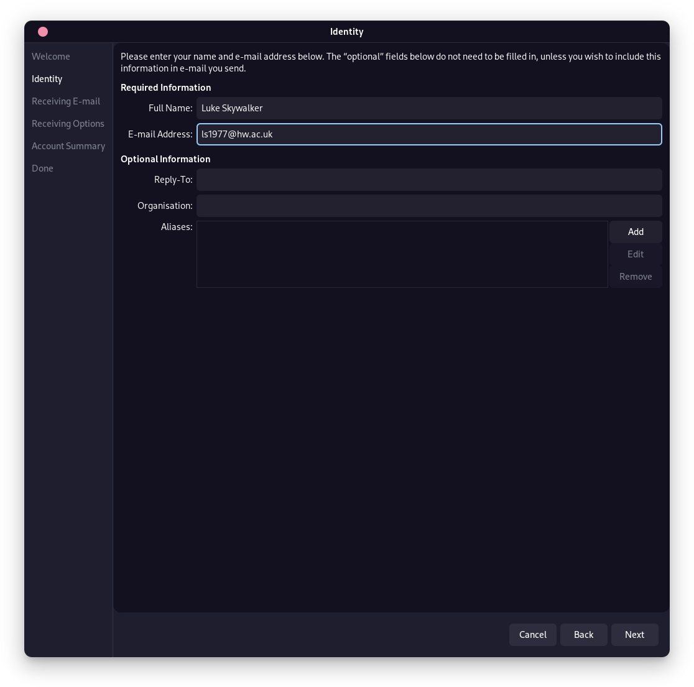
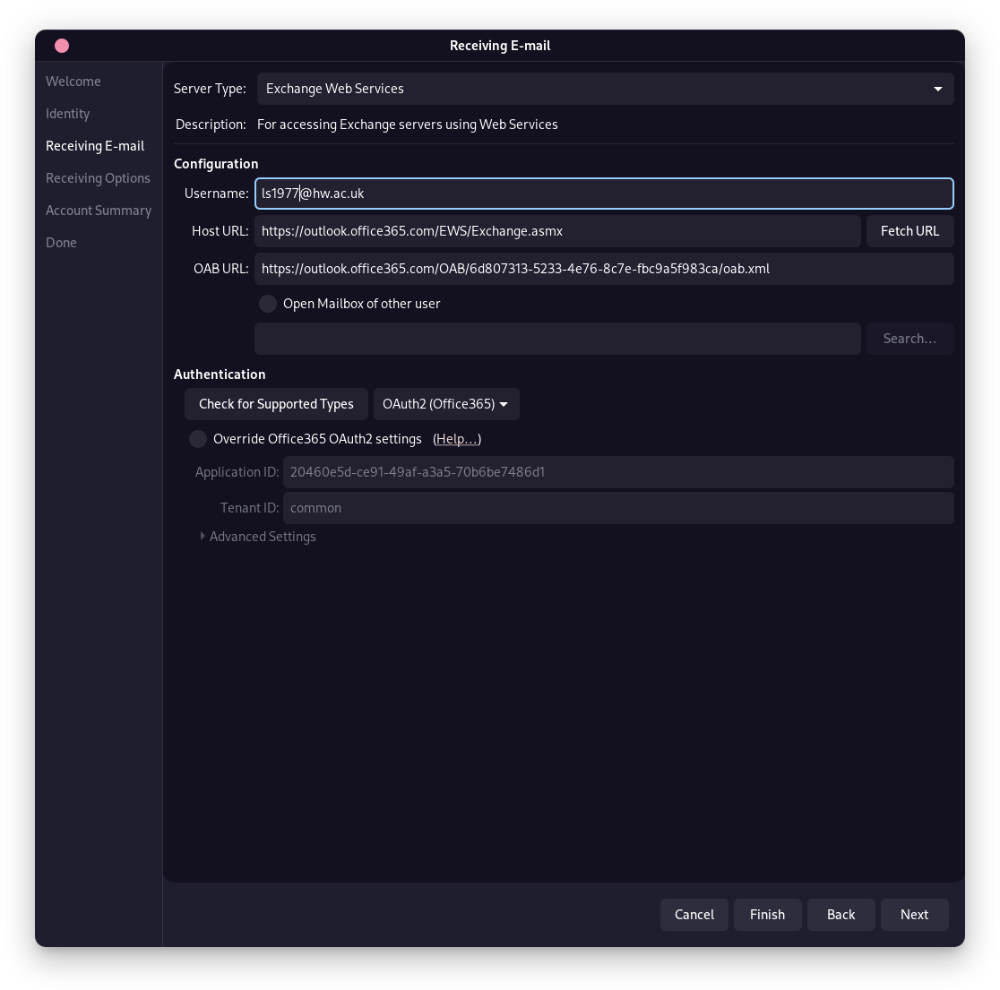

Contribute!
This is a community-built website, and the previous maintainers are no longer students of the university. Please help us keep information up-to-date by contributing!
Guide written by Kieran Gordon.
(Tested on Fedora Linux 36.)
Due to the proprietary nature of Microsoft Office 365 and Outlook, and the university requiring Two-Factor Authentication (and restricting the creation of App Passwords), some additional steps are required to access the email system on GNU/Linux systems. There are several different email clients for GNU/Linux but for this example we'll be using GNOME/Evolution.
Important! This guide may not work for other email clients. Refer to the documentation for your email client for more information.
To start, install Evolution using your distributions' package manager. Examples are shown below.
For Ubuntu, Debian and other Debian based distributions:
sudo apt update
sudo apt install evolution
sudo apt install evolution-ews
sudo dnf update
sudo dnf install evolution
sudo dnf install evolution-ews
sudo pacman -Syu
sudo pacman -S evolution
sudo pacman -S evolution-ews
sudo emerge evolution
sudo emerge evolution-ews
Alternatively, you can install a Flatpak version of Evolution. A guide on how to install Flatpak is available here.
The Flatpak build of Evolution ships with evolution-ews built in.
flatpak install flathub org.gnome.Evolution
Once installed, open Evolution and press File → New → Mail Account. You will then be prompted to follow a wizard.
Next, enter your Heriot-Watt Email Address, unselect "Look up mail server details based on the entered email address" and click Next.
Enter the following for each of the following fields:
- Server Type: Exchange Web Services
- Username: Your Heriot-Watt Email Address
- Host URL: https://outlook.office365.com
- Authentication Type: OAuth2 (Office365)
Then click Fetch URL. You will be prompted for your password, and if successful, the fields at the bottom filled in with the correct values.
Finally, click Next, and alter any settings you wish. Click Next again, and then finally you can then click Finish.
If everything went according to plan, you should be able to access your email account from Evolution!
Step-by-Step with Images
Step 1
Step 2
Note that for this step, the following results are expected after clicking Fetch URL and entering your password.
